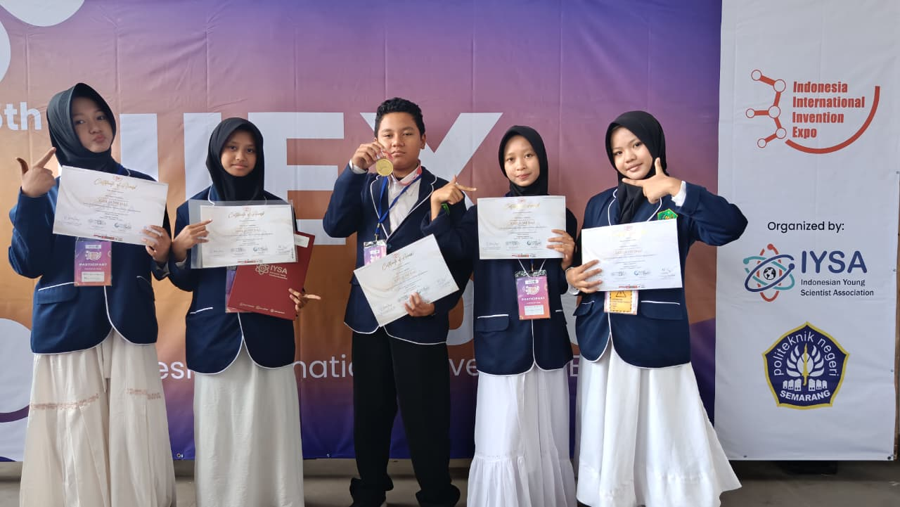
Tim riset siswa MTsN 3 Jembrana berhasil mengharumkan nama madrasah dan Indonesia dengan meraih Medali Emas pada ajang Indonesia International Invention Expo (IIIEX) 2026.
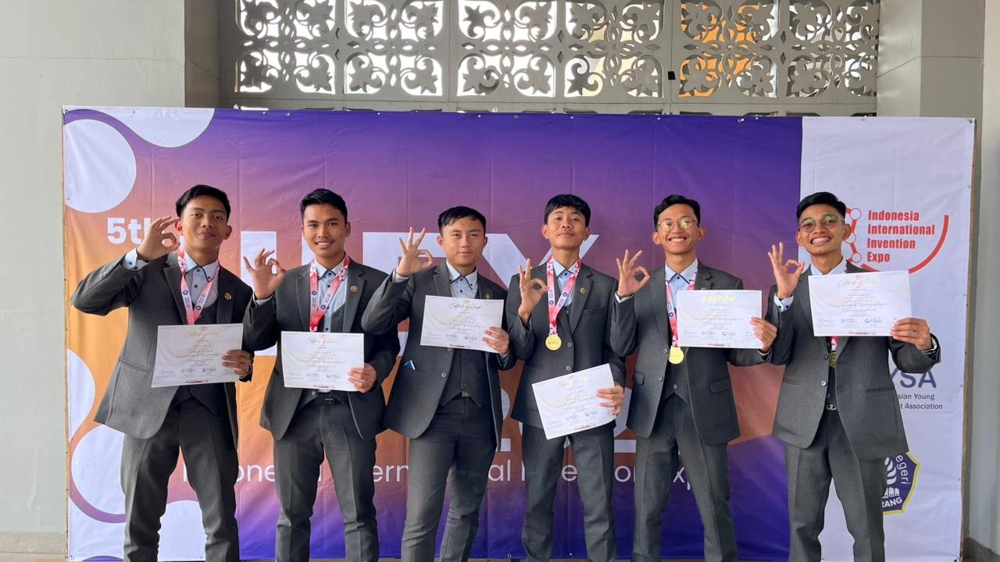
Pondok Modern Tazakka melalui Tazakka Science Club kembali menorehkan prestasi gemilang dalam ajang Indonesia International Invention Expo (IIIEX) 2026 dengan meraih Gold Medal pada kategori Electronics and IoT.
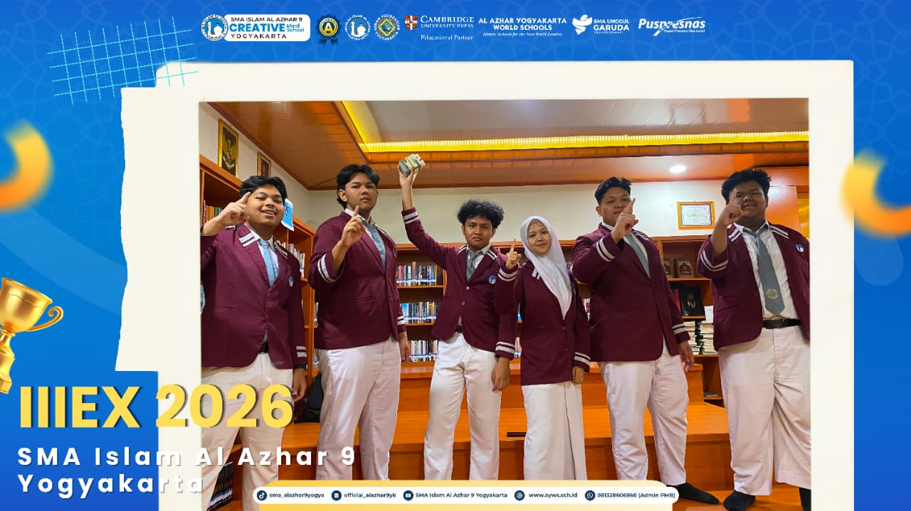
Enam murid SMA Islam Al Azhar 9 Yogyakarta berhasil meraih medali perak kategori Social Science di Indonesia International Invention Expo (IIIEX) 2026.
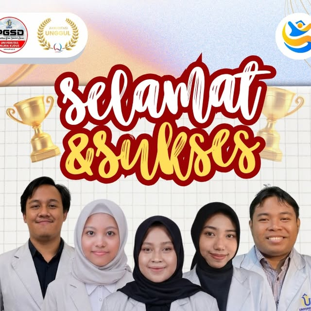
Selamat dan Sukses atas diraihnya Gold Medal pada Indonesia International Invention Expo (IIIEX) Competition 2026 oleh Tim Mahasiswa PGSD FKIP Universitas Muria Kudus.
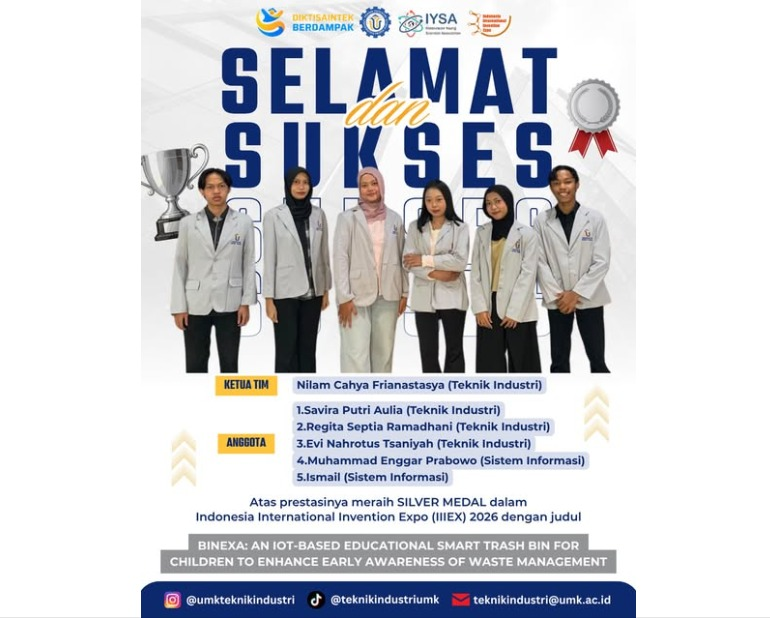
Selamat & Sukses atas prestasi membanggakan tim kolaborasi Teknik Industri dan Sistem Informasi Universitas Muria Kudus (UMK) yang berhasil meraih Silver Medal di ajang IIIEX 2026.
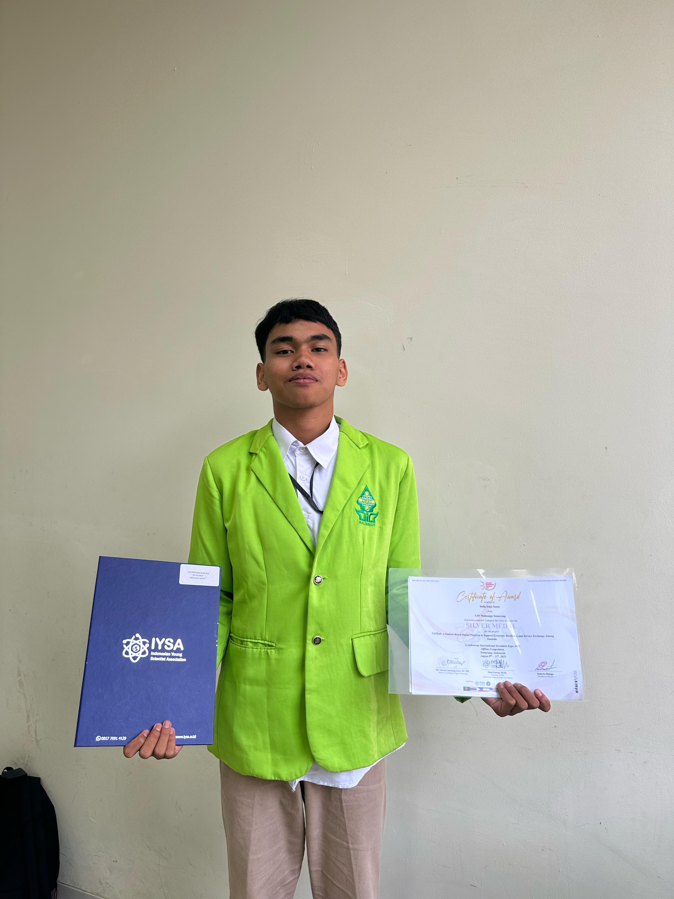
Tim mahasiswa dari Program Studi Pendidikan Biologi FST UIN Walisongo Semarang berhasil meraih Silver Medal pada ajang Indonesia International Invention Expo (IIIEX) 2025 dengan inovasi platform UniTask.
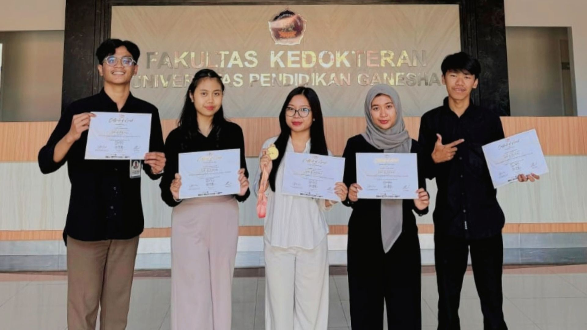
Mahasiswa Universitas Pendidikan Ganesha (Undiksha) berhasil meraih Medali Emas (Gold Medal) di ajang Indonesia International Invention Expo (IIIEX) 2025 melalui karya inovatif BULEVITA.
Santri SMA Trensains Muhammadiyah Sragen sukses menorehkan prestasi membanggakan dengan meraih Medali Emas pada kompetisi inovasi internasional IIIEX 2025.
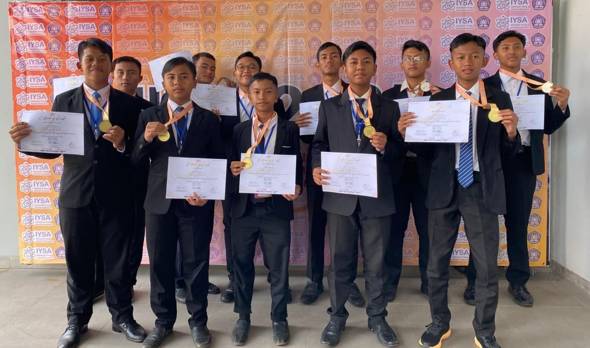
Santri Pondok Modern Tazakka berhasil mengharumkan nama pondok dengan meraih Gold dan Silver Medal di ajang Indonesia International Invention Expo (IIIEX) 2025 di Semarang.
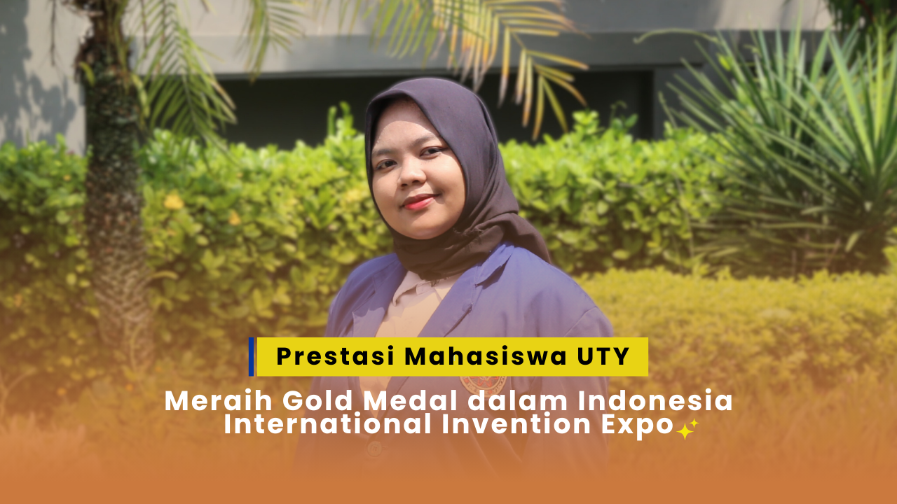
Mahasiswa Program Studi Pendidikan Bahasa Inggris Universitas Teknologi Yogyakarta (UTY) berhasil menorehkan prestasi gemilang dalam kompetisi inovasi internasional IIIEX.
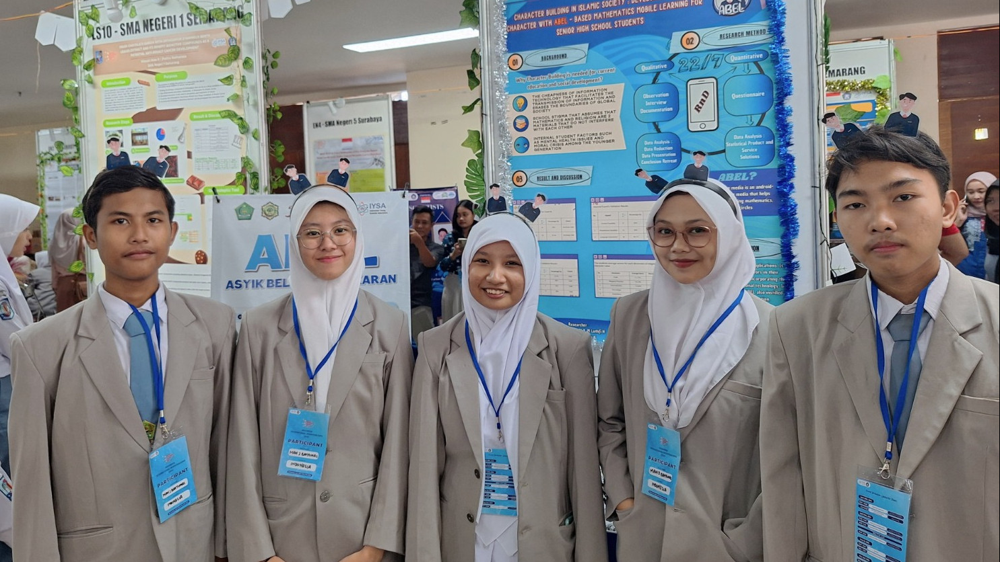
The research team of Madrasah Aliyah Negeri (MAN) 2 Banyumas won the 3rd Indonesian International Invention Expo (IIIEX) 2024 Gold medal for the Life Science competition category. MAN 2 Banyumas students in this event researched about student character development.
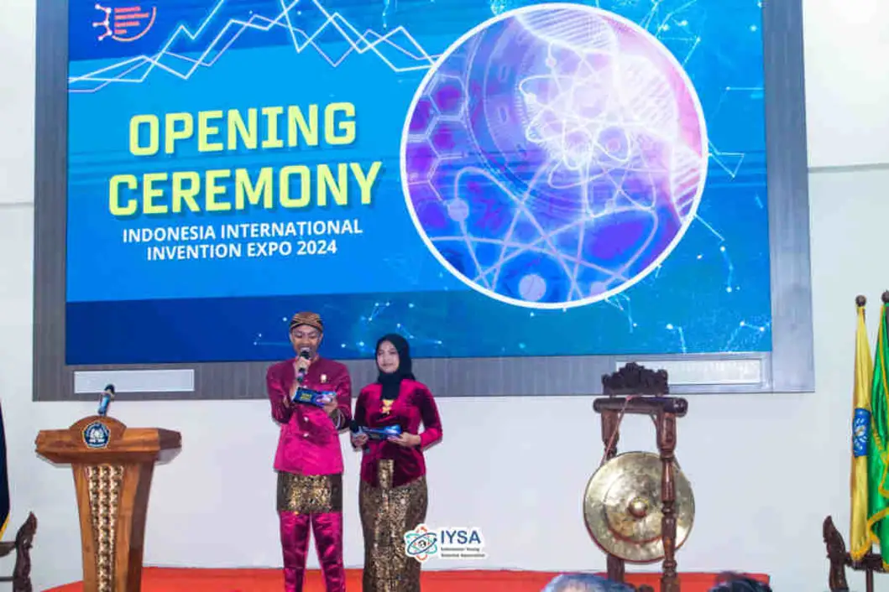
At the end of April to early May, IYSA again organized one of our annual events which we named Indonesia International Invention Expo (IIIEX) for the 3rd time in one of the state universities in the city of Semarang, namely Politeknik Negeri Semarang (POLINES).
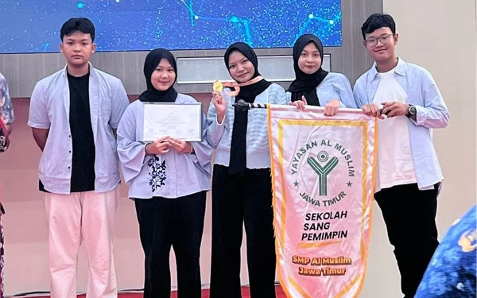
Five Al Muslim Junior High School students won gold medals at the Indonesia International Invention Expo (IIIEX) 2024 competition organized by the Indonesia Young Scientist Association (IYSA) and Politeknik Negeri Semarang (Polines).
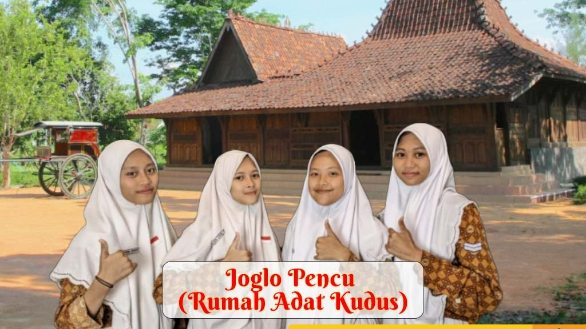
The research team of Madrasah Aliyah Negeri (MAN) 1 Kudus succeeded in presenting a bronze medal at the Indonesia International Invention Expo (IIIEX) 2023 organized by the Indonesian Young Scientist Association (IYSA).
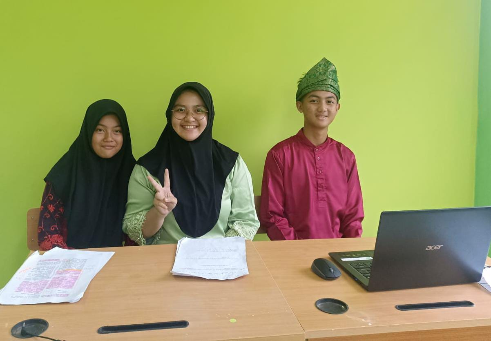
The Research Team of Madrasah Tsanawiyah (MTs) Negeri 3 Sanggau won first place by presenting a Gold Medal in an international scientific competition, Indonesia International Invention Expo (IIIEX) 2023 in the Life Science category.
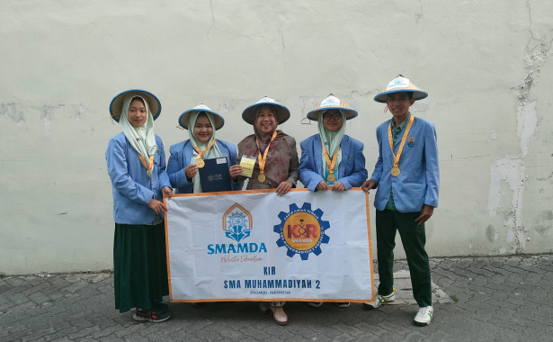
The Youth Scientific Group (KIR) of SMA Muhammadiyah 2 (Smamda), Sidoarjo succeeded in winning international champion at the Indonesia International Invention Expo (IIIEX) 2023 with the product Organic MSG.
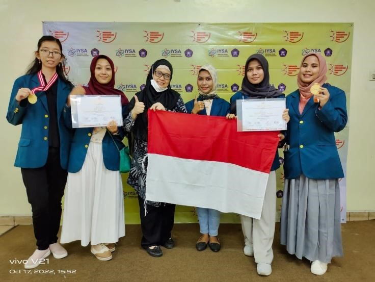
A proud achievement was achieved by five students of the Medical Study Program at the Indonesia International Invention Expo (IIIEX) 2022.
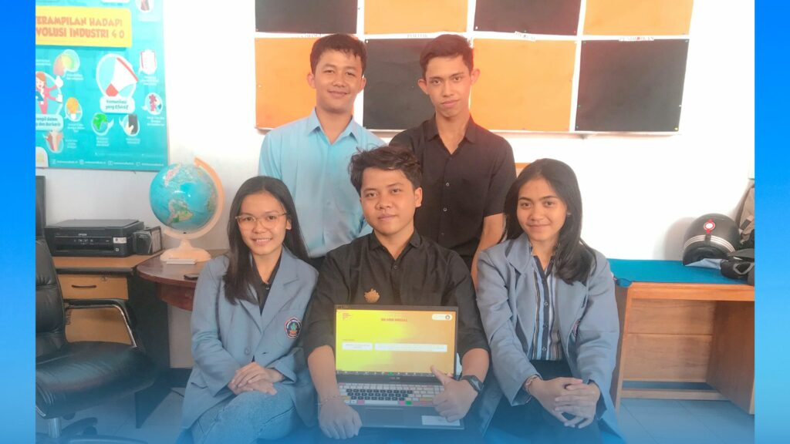
International level achievements were again achieved by students of Universitas Pendidikan Ganesha (Undiksha) at the Indonesia International Invention Expo (IIIEX 2022).
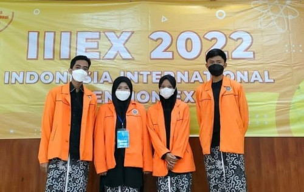
The student team from the Chemical Engineering Study Program of Universitas Ahmad Dahlan (UAD) successfully won a gold medal and a special award from MIICA at the IIIEX 2022.